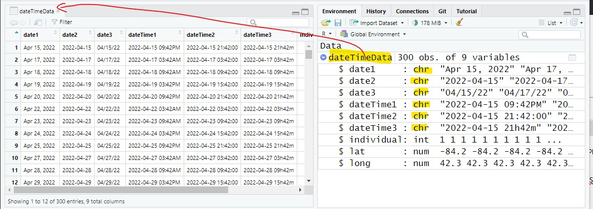

Which and Regular Expression
Matrices
The script for the lesson is here (right-click, save link as... -- put in scripts folder).
The dateTimeData.csv (just left-click -- put in data folder)
We have mostly worked with two variable types in R: numeric and string (also called characters or string of characters). Numeric values always appear outside of quotes and string values always appear in quotes. As a reminder, if a numeric value is in quotes, it is treated as a string.
In this lesson we introduce two more variable type: Date and POSIXct. Date, as the name implies, holds information about the date whereas POSIXct holds information about both the date and the time.
POSIX is a system of standards developed for UNIX computers in the 1970s. ct means Calendar Time. So POSIXct is the UNIX standard for calendar time -- and we continue to use this standard to this date (and maintain the unintuitive name).
Let's open the data file and save the contents to a data frame called dateTimeData.
dateTimeData = read.csv("data/dateTimeData.csv");
The first six columns in dateTimeData (fig ##) have values that look like dates and times but R still sees these columns as strings (chr).
In other words, R does not automatically assign values that look like dates and times to Date or POSIXct variables. R just sees quotes and assign the values to a string variable. We need to manually convert the string columns into Date or POSIXct variables.

R sees the columns with date and time values as strings (chr)
We are going to start with converting strings that hold only date values to a Date variables and later in the lesson we will convert strings that have time values to POSIXct variables. The process is very similar for both Date and POSIXct.
as.Date() is the function that reads in a string and converts it to a Date variable. However, if you pass a string into as.Date(), you will likely get the following error:
> as.Date(pseudoData$date3)
Error in charToDate(x) :
character string is not in a standard unambiguous format
This error occurs because dates can come in many different formats (e.g., April 15, 2022; 2022-04-15; 4/15/22). as.Date() tries to figure out the format used in the string values but as.Date() often fails to figure out a format and it gives you the error above.
Even when as.Date() figures out a format, it is often the wrong format. In the following example, as.Date() assumes the first digits in the string represent the year even though, visually, the year is obviously the last four digits.
> as.Date("12-10-2022")
[1] "0012-10-20"
The solution is to explicitly tell as.Date() the format of the date values using the format argument.
The as.Date() function with the format argument
First we need to break down the date values into their component parts.
Let's start with the first column (fig ##) where the dates look like this: Apr 15, 2022
We need to explicitly tell as.Date() how the date is formatted and this means breaking down every component of the string.
Broken down, each cell in the column date1 has:
Next, we to translate the above information into a language that as.Date() understands using the format argument.
The official term for the representation of the different parts of the datetime string is conversion specifications, which you can find here under the details section: https://stat.ethz.ch/R-manual/R-devel/library/base/html/strptime.html
The beginning of the list of conversion specifications
You can also get the conversion specifications in PDF format here (it's a handy document to have whenever you are dealing with datetime objects).
The conversion specifications allow you to generalize the different components of the datetime -- and they all start with a %. When you declare the format of a datetime string, you replace the date and time components of the string with conversion specifications. For instance, Apr 15, 2022 contains the abbreviated month so we know %b will be in the specification.
Some other specifications:
%m: Month -- given as a number between 00 and 12
%M: Minutes -- given as a number between 00 and 59
%y: Last two digits of the year
%Y: Full year
So, let's take our string that represents a datetime and replace the date-time components with a conversion specification.
example of string: "Apr 15, 2022"
Broken down, each cell in the column date1 has:
Note: the non-datetime characters in the specification (e.g., the spaces and the comma) need to be maintained
Now we have the general format for the dates in the date1 column using conversion specifications and it is:
"%b %d, %Y"
Note: This is still a string value, so we keep the quotes. The conversion specifications are in the string.e
And we can attach that conversion specification string using the format argument in as.Date():
stnDate = as.Date(dateTimeData$date1, # date1 is a chr (string) column
format="%b %d, %Y"); # give the format of date1
In the Environment tab, we see that stnDate is a Date variable with 300 values in it.
stnDate Date[1:300], format: "2022-04-15"...
stnDate is shown in the default method R uses to display Date variables, which is 4-digit year, 2-digit month, and 2-digit day.
Formatting dates properly is vital when you are calculating or plotting date and time data. When properly formatted, R understands the order of the value and the intervals between them.
If we take the original date1 column and sort it, the sorting will be in alphabetical order with April dates followed by August, then July, June, and May (because R sees date1 as a string).
note: to save space, I am only outputting every 10th value
> sort(dateTimeData$date1[seq(from=1,to=300,by=10)])
[1] "Apr 15, 2022" "Apr 15, 2022" "Apr 15, 2022"
[4] "Apr 28, 2022" "Apr 28, 2022" "Apr 28, 2022"
[7] "Aug 06, 2022" "Aug 06, 2022" "Aug 06, 2022"
[10] "Jul 12, 2022" "Jul 12, 2022" "Jul 12, 2022"
[13] "Jul 24, 2022" "Jul 24, 2022" "Jul 24, 2022"
[16] "Jun 04, 2022" "Jun 04, 2022" "Jun 04, 2022"
[19] "Jun 17, 2022" "Jun 17, 2022" "Jun 17, 2022"
[22] "Jun 29, 2022" "Jun 29, 2022" "Jun 29, 2022"
[25] "May 10, 2022" "May 10, 2022" "May 10, 2022"
[28] "May 23, 2022" "May 23, 2022" "May 23, 2022"
But, if we sort stnDate, a Date object, we get the values in order of the date:
> sort(stnDate[seq(from=1,to=300,by=10)])
[1] "2022-04-15" "2022-04-15" "2022-04-15"
[4] "2022-04-28" "2022-04-28" "2022-04-28"
[7] "2022-05-10" "2022-05-10" "2022-05-10"
[10] "2022-05-23" "2022-05-23" "2022-05-23"
[13] "2022-06-04" "2022-06-04" "2022-06-04"
[16] "2022-06-17" "2022-06-17" "2022-06-17"
[19] "2022-06-29" "2022-06-29" "2022-06-29"
[22] "2022-07-12" "2022-07-12" "2022-07-12"
[25] "2022-07-24" "2022-07-24" "2022-07-24"
[28] "2022-08-06" "2022-08-06" "2022-08-06"
You can also perform addition and subtraction on Date objects, whereas addition and subtraction on strings gives you an error:
> stnDate[1:5]
[1] "2022-04-15" "2022-04-17" "2022-04-18" "2022-04-19" "2022-04-20"
> stnDate[1:5]-4
[1] "2022-04-11" "2022-04-13" "2022-04-14" "2022-04-15" "2022-04-16"
> stnDate[1:5]+3
[1] "2022-04-18" "2022-04-20" "2022-04-21" "2022-04-22" "2022-04-23"
Extension: How Date and POSIXct object tell time
Once you have date values properly formatted and saved as a Date object, you can then reformat the date to customize the output using format().
For instance, you can customize stnDate to the more familiar to American month/date/2-digit year format:
date_formatted = format(stnDate, format="%m/%d/%y");
Or, you can get information from the dates, like the day of the week (%A):
date_weekOfDay = format(stnDate, format="%A");
date_formatted: chr[1:300] "4-15-22" "4-17-22"...
date_weekOfDay: chr[1:300] "Friday" "Sunday"...
When you reformat, the object is no longer a Date object -- the reformatted object is a string object and behaves as a string object. This is awkward behavior in R -- there is no way to create a Date variable with a customized format. Instead, you use the Date variable in plots or calculation and then reformat afterwards when you want to display the values.
Date variables and the corresponding as.Date() function work for values with only dates in them. Values that have dates and times (or just times) need to be saved as POSIXct variables and the corresponding function is as.POSIXct().
The only difference between Date and POSIXct variables is that there are a lot more conversion specifications that can be used for POSIXct (all of the specification used for dates and all of the specifications used for time). Otherwise, they operate the same.
Let's break down the datetime1 column in dateTimeData, which has values that look like this: 2022-04-15 09:42PM
There is:
Using the conversion specifications, this becomes:
So, the general format of all the values in datetime1 is:
"%Y-%m-%d %I:%M%p"
Once again, it is really important to maintain every non-dateTime component (e.g., spaces, dashes, commas). The conversion specification is an instruction to a datetime function (as.Date or as.POSIXct) that gives the exact format of the string. If the format is off even by a little, the function will likely not produce correct datetimes.
And we can create a POSIXct variable using as.POSIXct and the datetime conversion specification above:
stnDateTime = as.POSIXct(dateTimeData$dateTime1,
format="%Y-%m-%d %I:%M%p");
stnDateTime is a POSIXct object and R's default method for displaying POSIXct value is the same as for Date -- followed by a 24-hour time using colons.
stnDateTime: POSIXct[1:300], format "2022-04-15 21:42:00"
Like Date object, we can reformat a POSIXct object using format():
dateTime_formatted = format(stnDateTime, format="%m-%d-%y %H%m");
Or, pull some information out of it (in this case, the abbreviated day of the week %a):
dateTime_weekOfDay = format(stnDateTime, format="%a");
dateTime_formatted: chr[1:300] "04-15-22 2104" "04-17-22 2104"...
dateTime_weekOfDay: chr[1:300] "Fri" "Sun" "Mon"...
When we added and subtraction from a Date object, each unit is 1 day. So, adding 5 to a Date object adds 5 days.
When we added and subtraction from a POSIXct object, each unit is 1 second. So, adding 5 to a POSIXct object adds 5 seconds.
> stnDateTime[1:5]
[1] "2022-04-15 21:42:00 EDT"
[2] "2022-04-17 03:42:00 EDT"
[3] "2022-04-18 09:42:00 EDT"
[4] "2022-04-19 15:42:00 EDT"
[5] "2022-04-20 21:42:00 EDT"
> stnDateTime[1:5] + 34
[1] "2022-04-15 21:42:34 EDT"
[2] "2022-04-17 03:42:34 EDT"
[3] "2022-04-18 09:42:34 EDT"
[4] "2022-04-19 15:42:34 EDT"
[5] "2022-04-20 21:42:34 EDT"
> stnDateTime[1:5] - 12
[1] "2022-04-15 21:41:48 EDT"
[2] "2022-04-17 03:41:48 EDT"
[3] "2022-04-18 09:41:48 EDT"
[4] "2022-04-19 15:41:48 EDT"
[5] "2022-04-20 21:41:48 EDT"
Extension: How Date and POSIXct objects tell time
We can add the reformatted vector we created to the data frame:
dateTimeData$date_ref = date_formatted;
dateTimeData$weekOfDay = dateTime_weekOfDay;
Adding two of the reformatted datetime vectors to the data frame
If you have any questions regarding this application, feel free to email them to the instructor here. You can attach the whole Project Folder as a zipped file.
Answer the following in comments inside your application script:
Date and POSIXct objects, in the backend, stores datetimes as a single number.
The zero-point for Date is Jan 1, 1970 and adds one for every day after:
If you want to go earlier than you subtract 1 so:
The zero-point for POSIXct is Jan 1, 1970 at midnight Greenwich Mean Time. To get any other time, you add 1 for every second after or subtract 1 for every second before. This is called epoch time and the current epoch time (as of this writing) is 1666830590, which means there have been 1666830590 seconds since Jan 1, 1970 at midnight GMT.
as.Date() and as.POSIXct() take string values with conversion specifications and create numeric datetime values. format() does the reverse and takes numeric datetime values and converts them into strings that are readable to the user. This all works because the epoch time is fixed to a point in time that everyone can agree upon. Everything else is a (very complicated) conversion.
If you want to know more about how this system works then here is a video I really like discussing all the problems with dealing time zones: